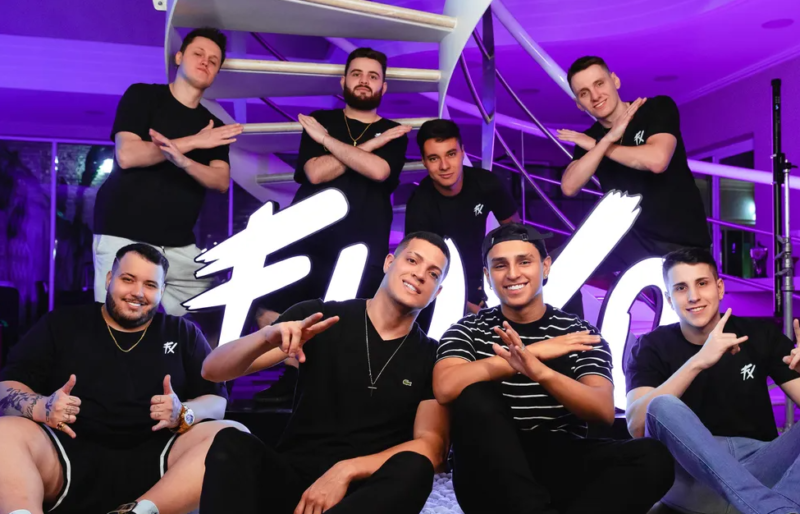

CS:GO: Fluxo vence 9z e se classifica para a BLAST Fall Showdown
Fluxo está classificado para a BLAST Fall Showdown de CS:GO. Neste domingo (18), a equipe liderada por Adriano “WOOD7” venceu a argentina 9z pela final da FiReLEAGUE Latin Power Fall 2022 e garantiu sua vaga em mais um evento internacional da modalidade.
Fluxo e 9z entraram no servidor com a vaga para a BLAST Fall Showdown em jogo. Os brasileiros fizeram uma série sólida, apresentaram um ótimo CS:GO e venceram por 2 a 0 nos mapas Inferno (16-10) e Nuke (16-13), se classificando para seu segundo um torneio internacional em poucas semanas.
(Foto: André Luís)
Classificado, o Fluxo agora terá pela frente seu maior desafio desde a entrada da organização no CS:GO. A BLAST Fall Showdown acontece entre os dias 19 e 23 de outubro em uma cidade que ainda não foi revelada pela organizadora. Serão dezesseis times batalhando por uma das duas vagas na BLAST Fall Finals, um dos maiores torneios do cenário competitivo.